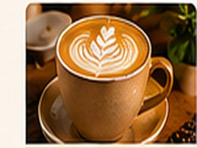
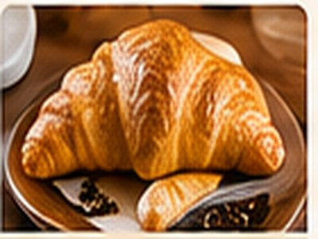

01
Carefully brewed
Kenyan beans, roasted for a full and balanced cup.
A little pause in the city
Welcome to Savanna Brew Café, your cosy corner in Westlands where every cup tells a story. We roast and brew coffee from the highlands of Nyeri and Kiambu, and pair it with fresh pastries baked every morning.
Explore the menuMade of good things
From the first pour to the last crumb, we celebrate local growers, thoughtful ingredients and the simple pleasure of slowing down.

Kenyan beans, roasted for a full and balanced cup.

Fresh pastries made for your coffee break.

A welcoming space for conversations and calm.
Your table is waiting